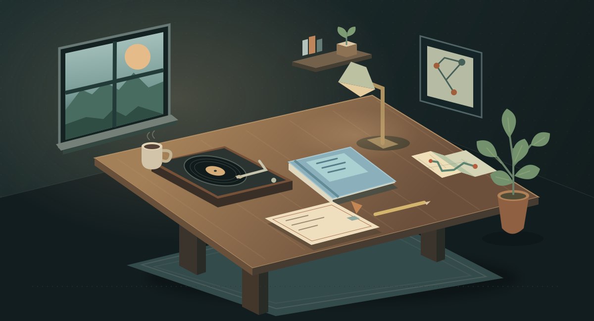

A small experiment in clarity
A little room
for curiosity.
A few things to discover, a small puzzle to untangle, and something to take with you.
No timer. Take your time.
The Curiosity Room
Papa Kojo’s curiosity room Come on in

Choose an object. Follow your curiosity.Four corners to explore
Behind the little things
I’m interested in the moment a tangled problem starts to make sense. This is a small place to play with that idea.
Meet Papa Kojo